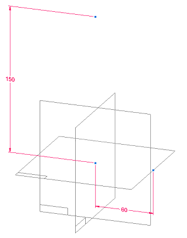
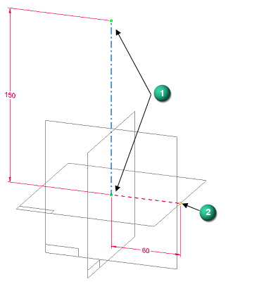
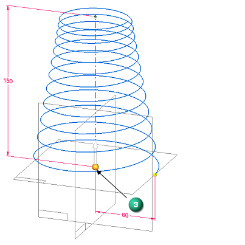
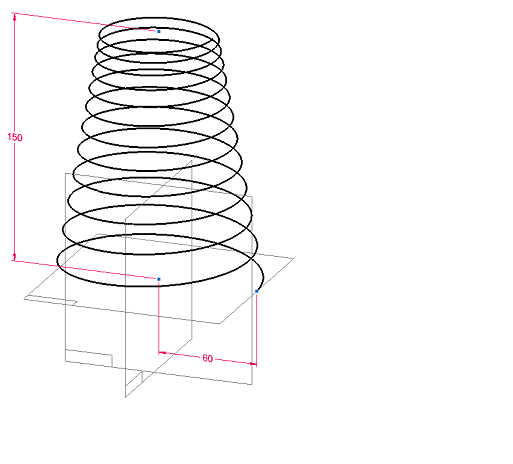

Create a helical curve
You can create a tapered, variable-pitch, helical curve using the Helical Curve command  . This example shows how to create a helical curve using three points on the previously
defined geometry shown below.
. This example shows how to create a helical curve using three points on the previously
defined geometry shown below.

-
Select Surfacing tab→Curves group→Helical Curve
 .
. -
Define the axis (1) by clicking the first two points. The next point that you select defines the starting point of the curve (2).

-
In the Helical Curve Parameters dialog box, do the following:
-
From the helix Type list, select Variable Pitch.
-
From the Method list, select Length and Pitch.
-
Set Rotation=Right-handed.
-
From the Taper list, select By Angle.
-
In the Angle box, enter 10 degrees.
-
Click the Inward taper option.
-
In the Start diameter box, enter 20 mm.
-
In the End pitch box, enter 5 mm.
-
Click Close.
The steering wheel (3) is displayed to allow you to change the direction of the helix.

-
-
When you are satisfied with the results, click Finish to complete the actions.

You can create many different types of helical curves. For more information, see Helical Curve command and Helical Curve Parameters dialog box.
How do I
Create a spiral curveLook up more details
Helical Curve commandHelical Curve command bar
Helical Curve Parameters dialog box